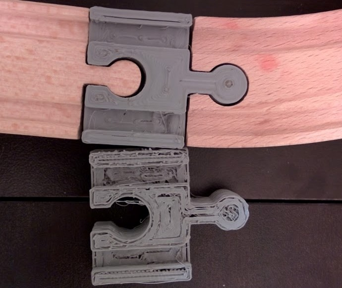

In the recent weeks I've been focusing on improving and optimizing the Kossel in order to produce much higher quality prints. I've included a copy of my Slic3r configuration along with some insights in to the settings that have made the most difference.
Slic3r
I've decided to use Slic3r as my slicer for the Kossel because it offers fine control over the process (in Advanced Mode), exportable configurations, and most important I'm familiar with it. It's been a while since I used it in high school, but it doesn't seem to have changed much.
Temperature
I've found the best temperatures for my PLA to be 215C for the first layer and 205 for all of the remaining layers. I really don't have a way of testing the accuracy of my temperature sensor, so I have to blindly assume that those are the actual temperatures. At 205 degrees there is a slight problem of leaking as the print head moves between locations, however lowering the temperature runs the risk of causing the extruder motor to slip. I've had some issues with this in the past. There is an experimental feature within Slic3r that allows you to have the extruder retract plastic during moves (reducing drip), however my tests have shown that it often does not resume extruding as fast as it needs to.
Support
Support and rafting is the one area that I know I will need to keep refining. Currently the best configuration I've found is two laps of skirt to remove nozzle buildup, four laps of brim to assist adhesion, and three layers of rafting with three interference layers.
With regards to the raft, the three layers seems to be the easiest to remove of what I've tried, but I really need to test more with the spacing to improve this. The interference layers cause the printer to leave a gap between the raft and the first layer, making the raft easier to remove and overcoming blemishes. The cost of this is that the first layer is often not perfectly smooth.
Infill and Texture
Out of all the Slic3r options I prefer the honeycomb infill at 30% fill density. Honeycomb is extremely sturdy as well as really fun to watch print, which are equally important. However, the concentric fill pattern makes for a really smooth finish on the top layers.
Download
Here's a download link to my Slic3r configuration, feel free to use it and tweak it. I'd love to hear any improvements!
Download